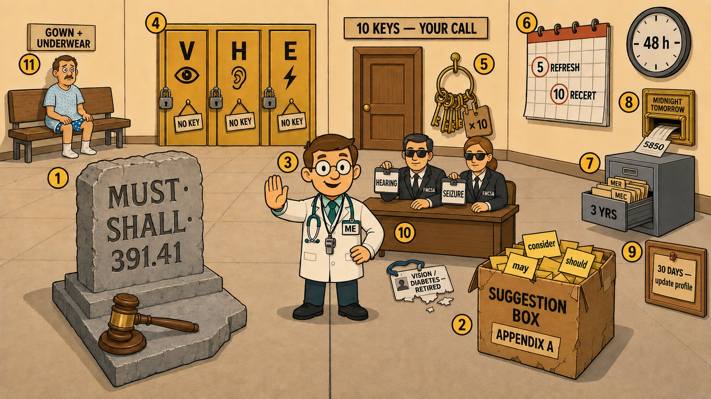

Card 1 of 13 · 49 CFR 391.41 · Appendix A · 390.111
The Rulebook vs. the Suggestion Box
Regulation versus guidance, the three objective standards, who decides — and the examiner's own deadlines.

0:00 / 0:00
Press play — the narrator walks the scene and the spotlight follows to each numbered object. Click any paragraph to jump there. Space play/pause · ←/→ previous/next object · [/] previous/next card.
Not started — press play, then try the questions.
What this card covers
Regulation versus guidance, the three objective standards, who decides — and the examiner's own deadlines. Standard: 49 CFR 391.41 · Appendix A · 390.111.
The hooks to keep
- Stone says must, cardboard says consider, Doc decides
- Vision, hearing, epilepsy are locked; ten are your call
- 5-year refresher, 10-year recertification
- 3 years, 48 hours, midnight tomorrow, 30 days
- Only hearing and seizure exemptions remain — FMCSA grants them
Test yourself
9 questions on this card
Answer each question to see the explanation, its sources, and the cheat-sheet entry.